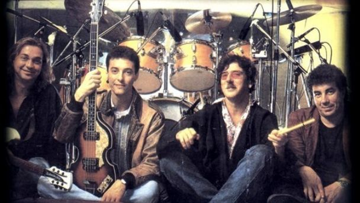

<figure align="center">
    <figcaption align="center"><b><h1>Imagen de la banda Serú Girán</h1></b></figcaption>
    
    

    <figcaption align="center">Serú Girán fue un grupo argentino de rock integrado por Charly García (voz, teclados, guitarras),<br> David Lebón (voz, guitarras),<br> Pedro Aznar (bajo, teclados, voz),<br> y Oscar Moro (batería). </figcaption>

</figure>

 <!--Aca comienza el mapeo de la imagen-->
 <map name="bandamusical">
    <area shape="circle" coords="441,126,50" href="Charly Garcia/charlygarcia.html" title="Chary García">
    <area shape="circle" coords="244,121,50" href="Pedro Aznar/pedroaznar.html" title="Pedro Aznar">
    <area shape="circle" coords="599,150,50" href="Oscar Moro/oscarmoro.html" title="Oscar Moro">
    <area shape="circle" coords="83,100,50" href="David Lebon/davidlebon.html" title="David Lebón">

</map>